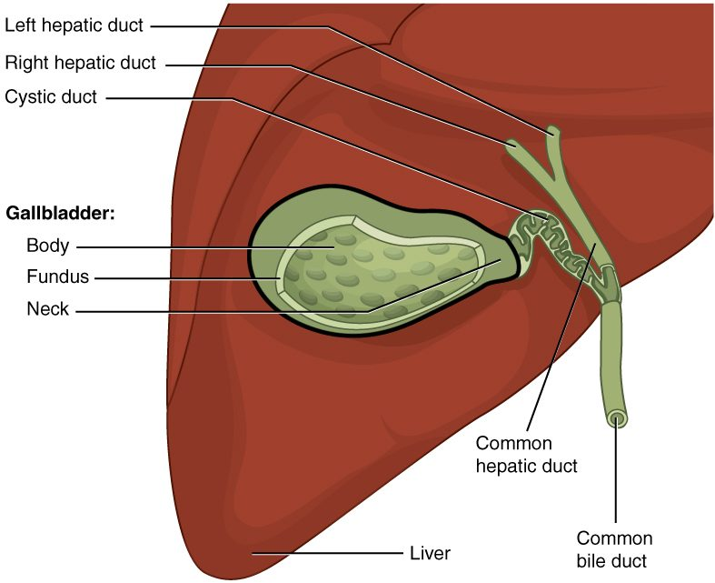

Your liver, gallbladder and pancreas never touch your food, yet without them you could not digest a meal. This page covers the liver's structure and functions, what bile is and how bile salts help digest fat, what the gallbladder does and why gallstones form, what enzymes the pancreas makes and how they are kept switched off until they reach the gut, and what goes wrong in pancreatitis, hepatitis and cirrhosis.
Three accessory organs, one exit
Eat a buttered roll and, within minutes of the first chyme reaching your duodenum, two fluids pour into it through a single opening: bile from your liver and gallbladder, and pancreatic juice from your pancreas. Neither organ is part of the tube that food passes through. They are accessory digestive organs: they make or store secretions and deliver them through ducts.
Figure 1 shows where they sit. The liver fills the upper right of your abdomen, under the diaphragm. The gallbladder is a small sac tucked under the liver's right lobe. The pancreas lies behind the stomach, with its head in the C-shaped curve of the duodenum and its tail reaching toward the spleen.
![A front view of the trunk with the digestive organs faded except the accessory organs. The large reddish-brown liver fills the upper right abdomen under the diaphragm, with a big right lobe and a smaller left lobe; two small lobes show between them. A green pear-shaped gallbladder sits under the right lobe. Thin green ducts from the liver and the gallbladder join into one duct that runs down to the curved first part of the small intestine. The pale yellow, lumpy pancreas lies across the back of the abdomen, its head in the curve of the intestine and its tail reaching the purple spleen on the left; a duct runs along its length.](../figures/os-23-24.jpg)
The liver: lobes and blood supply
The liver is your largest internal organ, about 1.5 kg in an adult. From the front you see a large right lobe and a smaller left lobe; from below, two small lobes, the caudate and the quadrate, sit between them.
On the underside is the porta hepatis (porta = gate, hepat- = liver): the "gate of the liver", where vessels and ducts enter and leave. Three things pass through it:
- The hepatic portal vein brings in blood from the stomach, intestines, spleen and pancreas. You met it in the hepatic portal system. It supplies about three quarters of the liver's blood: rich in absorbed nutrients, but partly deoxygenated.
- The hepatic artery brings in oxygenated blood from the aorta, about a quarter of the supply.
- The hepatic ducts carry bile out.
Blood leaves the liver by a different route, the hepatic veins, which drain into the inferior vena cava just below the heart. Because absorbed nutrients, drugs and toxins from the gut reach the liver before they reach the rest of your body, the liver gets the first chance to process them.
The liver lobule
Slice a pig's liver and you can see its pattern with the naked eye: tiny six-sided units packed together like honeycomb. Each one is a liver lobule (also called a hepatic lobule; lobule = small lobe), about 1 to 2 mm across (Figure 2).
![Three levels of liver structure. Top left: an outline of the liver. Top right: an enlarged patch of its surface showing six-sided lobules packed like honeycomb, each with a dark spot at its center, separated by thin connective tissue. Bottom: one lobule cut open as a block. Plates of reddish liver cells radiate like spokes from a blue vein running up the center, which joins a larger vein at the top. Purple channels run between the plates from the edges to the central vein. At the corners of the lobule stand bundles of three tubes: a blue vein branch, a red artery branch and a green duct. Blue vessels at the bottom are marked as coming from the portal vein.](../figures/os-23-25.jpg)
- Hepatocytes (hepat- = liver, -cyte = cell) are the liver's main working cells. They are arranged in plates, one or two cells thick, that radiate out from the center of the lobule like spokes.
- Hepatic sinusoids (sinus = cavity, -oid = like) run between the plates. These are the wide, leaky sinusoidal capillaries you met with the capillary types. Their lining has large gaps and no complete basement membrane, so plasma, and even plasma proteins, pass freely between the blood and the hepatocytes.
- A central vein runs down the middle of each lobule and collects the blood from its sinusoids. Central veins join into the hepatic veins.
- A portal triad (triad = group of three) sits at each corner of the lobule. It holds three tubes: a branch of the hepatic portal vein, a branch of the hepatic artery, and a bile duct.
- Reticuloendothelial cells (reticul- = network, endo- = within; also called Kupffer cells) are macrophages that sit in the sinusoid walls. They engulf bacteria that cross the gut wall into portal blood, and old red blood cells.
Blood and bile flow in opposite directions
Follow one drop of blood through a lobule:
- Blood from a portal vein branch and blood from a hepatic artery branch enter the sinusoids at the corner of the lobule, where the two mix.
- The mixed blood flows slowly along the sinusoids toward the center, bathing the hepatocyte plates. The hepatocytes take up nutrients, drugs and wastes, and release glucose, plasma proteins and other products.
- The blood drains into the central vein, then into the hepatic veins and the inferior vena cava.
Bile travels the other way. Each hepatocyte secretes bile into a bile canaliculus (canaliculus = little canal), a tiny groove between neighboring hepatocytes, sealed by tight junctions. The canaliculi carry bile outward, away from the central vein, to the bile duct in the portal triad. Blood moves inward; bile moves outward; they never mix.
What the liver does
A hepatocyte does hundreds of jobs. The main ones fall into a few groups:
- Handling nutrients. After a meal, hepatocytes take up glucose from portal blood and store it as glycogen (glycogenesis). Between meals they break glycogen down (glycogenolysis) and make new glucose from amino acids and glycerol (gluconeogenesis), releasing glucose into the blood. Insulin and glucagon from the pancreatic islets direct these switches, as you saw in the pancreas and blood glucose topic. Hepatocytes also build and break down fats and make cholesterol.
- Making plasma proteins. Hepatocytes make albumin, most clotting factors (using vitamin K for factors II, VII, IX and X), fibrinogen, and many transport proteins.
- Handling nitrogen. When amino acids are broken down, their nitrogen is toxic. Hepatocytes convert it into a far less toxic waste that your kidneys excrete. You will meet this conversion in Lipid and protein metabolism.
- Detoxification. Detoxification (de- = remove, tox- = poison) is the chemical processing of drugs, alcohol, hormones and toxins. Liver enzymes change these molecules, often by adding a group that makes them water-soluble. Water-soluble products leave in the urine or in bile.
- Excreting bilirubin. Hepatocytes take up bilirubin from old red blood cells, conjugate it and secrete it into bile, as you saw with the red blood cell life cycle.
- Storing. The liver stores glycogen, iron (as ferritin), vitamin D, vitamin K, and vitamin B12, enough of that last one to last several years.
- Making bile. The rest of this page picks up here.
Detoxification is not always detoxifying. The same enzymes sometimes make a molecule more harmful. Acetaminophen is a common example: in an overdose, the liver turns so much of it into a reactive product that the product kills hepatocytes. That is why a large acetaminophen overdose damages the liver first.
Bile
Hepatocytes secrete about 0.5 to 1 L of bile a day. It is a yellow-green, slightly alkaline fluid made of:
- water and ions, including bicarbonate;
- bile salts, made by hepatocytes from cholesterol;
- bilirubin, which gives bile its color;
- cholesterol and phospholipids.
Bile has no digestive enzymes. Its digestive job belongs to the bile salts, and it is a physical job, not a chemical one.
Bile salts emulsify fat
Pour oil into water and it forms large drops. An enzyme that digests fat, such as lipase, is water-soluble, so it can only work at the surface of each drop. A few large drops have little surface for their volume, and digestion is slow.
A bile salt has a hydrophobic face and a hydrophilic face. The hydrophobic face sticks into a fat droplet; the hydrophilic face stays in the water. Coated with bile salts, the fat cannot easily merge back together. Churning in the gut breaks large droplets into smaller ones, and the bile salt coat keeps them small. This is emulsification (Latin emulgere = to milk out; milk is a natural emulsion): breaking fat into tiny droplets suspended in water.
Worked example: how much surface emulsification adds
Problem. A fat droplet 1 mm across is broken into droplets 0.01 mm across (the same total volume). By how much does the total surface area grow?
- Count the new droplets. Volume scales with diameter cubed. The diameter is 100 times smaller, so each small droplet has 100 × 100 × 100 = 1,000,000 times less volume. One large droplet becomes 1,000,000 small ones.
- Area of each small droplet. Area scales with diameter squared, so each small droplet has 100 × 100 = 10,000 times less area than the large one.
- Total area. 1,000,000 droplets × (1/10,000 of the original area each) = 100 times the original area.
Answer. A hundredfold more surface: dividing the diameter by 100 multiplies the surface by 100. Lipase has a hundred times more fat surface to work on.
The enterohepatic circulation
Your body holds only about 2 to 4 g of bile salts, yet a fatty meal needs more than that. The same bile salts are used again and again:
- Bile salts enter the duodenum in bile and work along the small intestine.
- In the last part of the ileum, carriers absorb about 95% of them.
- They travel in the hepatic portal vein back to the liver.
- Hepatocytes take them up from the sinusoids and secrete them into bile again.
This loop is the enterohepatic circulation (enter- = intestine, hepat- = liver). The pool cycles several times a day, and the small amount lost in the feces is replaced by new bile salts made from cholesterol. That loss is one of the main ways cholesterol leaves the body. If the last part of the ileum is diseased or removed, bile salts are lost, the pool shrinks, and both the digestion and the absorption of fat suffer.
The bile ducts
Bile collects from the canaliculi into bile ducts in the portal triads, which merge into larger and larger ducts (Figure 3):
- The right and left hepatic ducts drain the two halves of the liver.
- They join to form the common hepatic duct.
- The cystic duct (cyst- = bladder) from the gallbladder joins the common hepatic duct. Bile flows both ways in the cystic duct: into the gallbladder between meals, and out of it after a meal.
- Below that junction, the tube is the common bile duct. It runs down behind the duodenum and through the head of the pancreas.
- In most people, the common bile duct joins the main pancreatic duct in a small chamber in the duodenal wall, the hepatopancreatic ampulla (ampulla = small flask).
- The ampulla opens into the duodenum at a small bump, the major duodenal papilla (papilla = nipple).
A ring of smooth muscle around the ampulla, the hepatopancreatic sphincter (also called the sphincter of Oddi), controls the opening.

The gallbladder
The gallbladder (gall = bile) is a pear-shaped muscular sac, about 8 cm long, that holds 30 to 50 mL. It does not make bile. It stores and concentrates it.
Filling between meals
Between meals, the hepatopancreatic sphincter is closed. The liver keeps secreting bile, which backs up the common bile duct and flows up the cystic duct into the gallbladder. There, the epithelium actively absorbs sodium and other ions, and water follows by osmosis. Bile in the gallbladder becomes several times, up to about ten times, more concentrated than the bile the liver made.
Emptying after a meal
You met cholecystokinin (CCK; chole- = bile, cyst- = bladder, kin- = move) among the gastrointestinal hormones. Here is its effect on the bile system:
- Fat and protein in chyme reach the duodenum.
- Enteroendocrine cells in the duodenal wall release CCK into the blood.
- CCK makes the smooth muscle of the gallbladder wall contract.
- CCK also relaxes the hepatopancreatic sphincter.
- Concentrated bile flows down the cystic and common bile ducts into the duodenum.
Parasympathetic signals in the vagus nerve add a smaller push during the cephalic phase, before food even reaches the stomach.
Gallstones
Gallstones are hard lumps that form in the gallbladder. Most are cholesterol stones. Cholesterol does not dissolve in water; bile holds it in solution only while there are enough bile salts and phospholipids to carry it. When bile carries more cholesterol than they can hold, or when the gallbladder empties poorly and bile sits for a long time, cholesterol crystals form and grow into stones. Pigment stones, made from bilirubin, are less common and occur more when red blood cells are broken down fast.
Many gallstones never cause symptoms. Trouble starts when a stone blocks a duct:
- In the cystic duct: the gallbladder contracts against the blockage after a fatty meal, causing steady pain under the right ribs, often lasting an hour or more (biliary colic). A stone that stays stuck can lead to inflammation of the gallbladder.
- In the common bile duct: no bile reaches the duodenum. Conjugated bilirubin backs up into the blood, causing obstructive jaundice with dark urine and pale feces. Lipase still digests some fat, but more slowly, and without bile salts much of the digested fat is not absorbed (you will see why in Chemical digestion and absorption). Fat appears in the feces.
- At the hepatopancreatic ampulla: the stone can also block the pancreatic duct, and is a common cause of pancreatitis (below).
Surgeons often remove a troublesome gallbladder. Afterward, bile trickles from the liver into the duodenum all the time instead of in bursts. Most people digest normally, though a very large, fatty meal may cause loose stools.
The pancreas and pancreatic juice
You met the pancreas's endocrine side in the pancreas and blood glucose topic: the pancreatic islets, scattered clusters of cells that release insulin and glucagon into the blood. They make up only about 1 to 2% of the gland. The other 98% or so is an exocrine gland that makes pancreatic juice, about 1.2 to 1.5 L a day (Figure 4).
![Top: the pancreas, a long pale lobulated organ, with its broad head tucked into the curve of the first part of the small intestine and its narrow tail extending to the right; a main duct runs its length and joins the bile duct. Bottom: an enlarged square of pancreatic tissue. Most of it is round clusters of pink cells around tiny ducts that drain into a larger green duct, labeled as exocrine cells secreting pancreatic juice and acinar cells secreting digestive enzymes. Two pale blue-green islands of cells with capillaries running through them are labeled as pancreatic islet cells secreting hormones.](../figures/os-23-26.jpg)
Two kinds of cells make the juice:
- Acinar cells make the enzymes. They sit in grape-like clusters, each called an acinus (acinus = grape or berry; plural acini), around the blind end of a tiny duct. They pack their enzymes into vesicles and release them by exocytosis.
- Duct cells lining the small ducts add a watery fluid rich in bicarbonate. It makes pancreatic juice alkaline, about pH 8.
The ducts
The tiny ducts merge into the main pancreatic duct, which runs the length of the gland from tail to head and joins the common bile duct at the hepatopancreatic ampulla. Many people also have a smaller accessory duct that drains the upper part of the head and opens into the duodenum a little higher, at the minor duodenal papilla. How the two ducts join varies from person to person.
Bicarbonate neutralizes the acid
Chyme leaving the stomach can have a pH of 2. Pancreatic enzymes work best near neutral pH, and acid would damage the duodenal lining. The bicarbonate in pancreatic juice buffers the acid, using the carbonic acid–bicarbonate buffer you met in Foundations: bicarbonate combines with hydrogen ions to form carbonic acid, which breaks down into carbon dioxide and water. The duodenal contents rise to a pH of about 6 to 7.
Making that bicarbonate is the mirror image of making stomach acid. You met the alkaline tide: parietal cells put acid into the stomach and bicarbonate into the blood. Pancreatic duct cells do the reverse. They put bicarbonate into the duct and hydrogen ions into the blood, so blood leaving the pancreas after a meal is slightly more acidic.
The enzymes
Pancreatic juice carries enzymes for every major class of food molecule:
| Enzyme | Acts on | Released as |
|---|---|---|
| Pancreatic amylase | Starch and glycogen (amyl- = starch) | Active enzyme |
| Pancreatic lipase | Triglycerides: splits fatty acids off them (lip- = fat) | Active enzyme, helped by a partner protein, colipase |
| Trypsin | Proteins: cuts inside the chain | Trypsinogen (inactive) |
| Chymotrypsin | Proteins: cuts inside the chain at other sites | Chymotrypsinogen (inactive) |
| Elastase | Proteins, including elastin | Proelastase (inactive) |
| Other enzymes | Remove amino acids from the ends of protein chains; split nucleic acids | Some inactive, some active |
Exactly how each food molecule is taken apart, and how the pieces are absorbed, is the subject of Chemical digestion and absorption, two topics on.
Keeping the protein-digesting enzymes switched off
An enzyme that digests protein would digest the pancreas that makes it. The acinar cells avoid this the way the stomach's chief cells do: they make the enzymes as zymogens, inactive precursors (-ogen = producing). The switch is in the duodenum (Figure 5):
- Enteropeptidase (entero- = intestine, pept- = digestion, -ase = enzyme; older name enterokinase) is an enzyme fixed to the brush border of the duodenal lining. It cuts a short piece off trypsinogen, turning it into active trypsin.
- Trypsin then cuts and activates more trypsinogen, so activation speeds up.
- Trypsin also activates chymotrypsinogen into chymotrypsin, proelastase into elastase, and the other protein-digesting precursors.
Because enteropeptidase exists only in the intestine, the cascade starts only there. The pancreas adds two more safeguards: its acinar cells also make a trypsin inhibitor, a protein that blocks any trypsin activated too early, and its secretions keep moving down the ducts, out of the gland.
What controls pancreatic secretion
| Secretin | Cholecystokinin (CCK) | |
|---|---|---|
| Released when | Acid chyme lowers duodenal pH | Fat and protein reach the duodenum |
| Main target in the pancreas | Duct cells | Acinar cells |
| Pancreatic juice it produces | Large volume, rich in bicarbonate, few enzymes | Small volume, rich in enzymes |
| Effect on the gallbladder | Little direct effect | Contracts it |
| Effect on the hepatopancreatic sphincter | Little direct effect | Relaxes it |
| What its effect removes | The acid that triggered it | The fat and protein that triggered it, once digested |
Both are negative feedback: each hormone's effect removes its own stimulus. The two work together, and each strengthens the other's effect on the pancreas. Secretin also makes the bile duct cells add bicarbonate-rich fluid to bile. The vagus nerve starts some enzyme secretion during the cephalic phase.
Pancreatitis
Pancreatitis (-itis = inflammation) is inflammation of the pancreas. In acute pancreatitis, trypsin is activated inside the gland instead of in the duodenum. Trypsin activates the other enzymes, and they begin to digest the pancreas itself: its cells, its fat and its blood vessels. The injured tissue releases signals that trigger intense inflammation.
The two most common causes are a gallstone stuck at the hepatopancreatic ampulla, which blocks the pancreatic duct, and heavy alcohol use. Very high blood triglycerides and some drugs are other causes. The typical patient has severe, steady pain in the upper middle abdomen that goes through to the back, with nausea and vomiting. Enzymes leaking from the damaged gland raise the blood level of lipase, which is the key blood test. Severe cases can cause shock, as fluid leaks out of inflamed vessels.
Years of repeated injury, usually from alcohol, cause chronic pancreatitis: scar tissue replaces the acini and then the islets. Too little lipase reaches the gut, so fat passes undigested into pale, greasy, foul-smelling stools, and loss of beta cells can cause diabetes mellitus.
Hepatitis and cirrhosis
Hepatitis is inflammation of the liver. Viruses are a common cause:
- Hepatitis A spreads through food or water contaminated with feces. It causes an acute illness that nearly always clears completely.
- Hepatitis B spreads through blood, sex, and from mother to baby at birth. A vaccine prevents it. Infection at birth usually becomes long-lasting.
- Hepatitis C spreads mainly through blood, for example shared needles. It often becomes long-lasting without symptoms for years; antiviral drugs now cure most cases.
Alcohol, fat building up in the liver (often with obesity and type 2 diabetes), some drugs such as an acetaminophen overdose, and autoimmune attack also cause hepatitis. Injured hepatocytes release their enzymes into the blood, and if enough are damaged, bilirubin builds up and the patient becomes jaundiced.
Cirrhosis (Greek kirrhos = tawny, for the color of the scarred liver) is the end stage of long-lasting liver injury. The liver can regrow lost hepatocytes, but repeated injury over years activates hepatic stellate cells, star-shaped cells that sit just outside the sinusoid lining. They are not the macrophages. Once activated, they lay down collagen. Bands of scar tissue divide the liver, and clumps of regrowing hepatocytes form nodules that no longer have the normal lobule layout. Two kinds of problem follow:
- Blood cannot flow through. Scar tissue squeezes the sinusoids, so pressure in the hepatic portal vein rises. Blood backs up into the spleen and into veins that link the portal system to the systemic veins, such as those at the lower esophagus. These veins swell and can rupture and bleed heavily. Fluid leaks from the congested vessels into the peritoneal cavity (ascites).
- Too few working hepatocytes. Less albumin is made, so blood holds less water and fluid collects in the tissues and abdomen. Fewer clotting factors are made, so the patient bruises and bleeds easily. Bilirubin builds up, causing jaundice. Toxins from the gut, which the liver normally clears, reach the brain and cause confusion.
| Hepatitis | Cirrhosis | |
|---|---|---|
| What it is | Inflammation of the liver | Scarring that replaces normal lobules with scar bands and nodules |
| Time course | Acute (weeks) or long-lasting | Develops over years of injury |
| Common causes | Viruses, alcohol, fat buildup, drugs, autoimmunity | Long-lasting hepatitis from any of those causes |
| Can it fully recover? | Often, once the cause is removed | Scarring, even cirrhosis, can partly regress once the cause is removed, for example when hepatitis B is suppressed or hepatitis C is cured. The liver seldom returns fully to normal, and cirrhosis that has already caused complications regresses least |
| Portal vein pressure | Usually normal | Raised |
| Main dangers | Liver failure in severe acute cases; progression to cirrhosis | Bleeding veins, ascites, confusion, liver cancer |